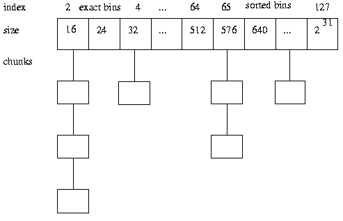

A Memory Allocator
by Doug Lea
[A German adaptation and translation of this article appears
in unix/mail December, 1996.]
Introduction
Memory allocators form interesting case studies in the engineering
of infrastructure software. I started writing one in 1987, and
have maintained and evolved it (with the help of many volunteer
contributors) ever since. This allocator provides implementations
of the the standard C routines malloc(),
free(), and realloc(), as well as a few
auxiliary utility routines. The allocator has never been given a
specific name. Most people just call it Doug Lea's
Malloc, or dlmalloc for short.
The code for this allocator
has been placed in the public domain (available from
ftp://g.oswego.edu/pub/misc/malloc.c), and is apparently
widely used: It serves as the default native version of malloc in
some versions of Linux; it is compiled into several commonly
available software packages (overriding the native malloc), and
has been used in various PC environments as well as in embedded
systems, and surely many other places I don't even know about.
I wrote the first version of the allocator after writing some C++
programs that almost exclusively relied on allocating dynamic
memory. I found that they ran much more slowly and/or with much
more total memory consumption than I expected them to. This was
due to characteristics of the memory allocators on the systems I
was running on (mainly the then-current versions of SunOs and BSD
). To counter this, at first I wrote a number of special-purpose
allocators in C++, normally by overloading operator
new for various classes. Some of these are described in a
paper on C++ allocation techniques that was adapted into the 1989
C++ Report article Some
storage allocation techniques for container classes.
However, I soon realized that building a special allocator for
each new class that tended to be dynamically allocated and heavily
used was not a good strategy when building kinds of
general-purpose programming support classes I was writing at the
time. (From 1986 to 1991, I was the the primary author of
libg++ , the GNU C++ library.) A broader solution was needed --
to write an allocator that was good enough under normal C++ and C
loads so that programmers would not be tempted to write
special-purpose allocators except under very special conditions.
This article presents a description of some of the main design
goals, algorithms, and implementation considerations for this
allocator. More detailed documentation can be found with the code
distribution.
Goals
A good memory allocator needs to balance a number of goals:
- Maximizing Compatibility
- An allocator should be plug-compatible with others; in particular
it should obey ANSI/POSIX conventions.
- Maximizing Portability
- Reliance on as few system-dependent features (such as system calls)
as possible, while still providing optional support for other useful
features found only one some systems; conformance
to all known system constraints on alignment and addressing rules.
- Minimizing Space
- The allocator should not waste space: It should obtain as little
memory from the system as possible, and should maintain memory in ways
that minimize fragmentation -- ``holes''in contiguous chunks
of memory that are not used by the program.
- Minimizing Time
- The
malloc(), free() and realloc
routines should be as fast as possible in the average case.
- Maximizing Tunability
- Optional features and behavior should be controllable by users
either statically (via
#define and the like) or
dynamically (via control commands such as mallopt).
- Maximizing Locality
- Allocating chunks of memory that are typically
used together near each other. This helps minimize page and cache misses
during program execution.
- Maximizing Error Detection
- It does not seem possible for a general-purpose allocator to
also serve as general-purpose memory error testing tool
such as Purify. However,
allocators should provide some means for detecting corruption due
to overwriting memory, multiple frees, and so on.
- Minimizing Anomalies
- An allocator configured using default settings should perform well
across a wide range of real loads that depend heavily on
dynamic allocation -- windowing toolkits, GUI applications, compilers,
interpretors, development tools, network (packet)-intensive programs,
graphics-intensive packages, web browsers,
string-processing applications, and so on.
Paul Wilson and colleagues have written an excellent survey
paper on allocation techniques that discusses some of these goals
in more detail. See Paul R. Wilson, Mark S. Johnstone, Michael
Neely, and David Boles, ``Dynamic Storage Allocation: A Survey
and Critical Review'' in International Workshop on Memory
Management, September 1995 (also
available via ftp).
(Note that the version of my allocator they describe is
not the most current one however.)
As they discuss,
minimizing space by minimizing wastage (generally due to
fragmentation) must be the primary goal in any allocator.
For an extreme example, among the fastest possible versions of
malloc() is one that always allocates the next
sequential memory location available on the system, and the
corresponding fastest version of free() is a no-op.
However, such an implementation is hardly ever acceptable: it will
cause a program to run out of memory quickly since it never
reclaims unused space. Wastages seen in some allocators used in
practice can be almost this extreme under some loads. As Wilson
also notes, wastage can be measured monetarily: Considered
globally, poor allocation schemes cost people perhaps even
billions of dollars in memory chips.
While time-space issues dominate, the set of trade-offs and compromises
is nearly endless. Here are just a few of the many examples:
- Accommodating worst-case alignment requirements increases
wastage by forcing the allocator to skip over bytes in order
to align chunks.
- Most provisions for dynamic tunability (such as setting
a debug mode) can seriously impact time efficiency
by adding levels of indirection and increasing numbers of branches.
- Some provisions designed to catch errors limit range of
applicability. For example, regardless of platform, the
current malloc internally handles allocation size arguments as if they
were signed 32-bit integers, and treats nonpositive arguments
as if they were requests for a size of zero. This is considered
by nearly all users as a feature rather than a bug: A negative
32-bit argument or a huge 64-bit argument is essentially always
a programming mistake. Returning a minimally-sized chunk will
help catch this error.
- Accommodating the oddities of other allocators to remain
plug-compatible with them can reduce flexibility and performance.
For the oddest example, some early versions of Unix allocators
allowed programmers to
realloc
memory that had already been freed. Until 1993,
I allowed this for the sake of compatibility.
(However, no one at all complained when this ``feature'' was dropped.)
- Some (but by no means all) heuristics that improve time and/or
space for small programs cause unacceptably
worse time and/or space characteristics for larger programs that
dominate the load on typical systems these days.
No set of compromises along these lines can be
perfect. However, over the years, the allocator has
evolved to make trade-offs that the majority of users find to
be acceptable. The driving forces that continue to impact the
evolution of this malloc include:
- Empirical studies of malloc performance by others
(including the above-mentioned paper by Wilson et al, as well
as others that it in turn cites). These papers find that
versions of this malloc increasingly rank as simultaneously
among the most time- and space-efficient memory allocators
available. However, each reveals weaknesses or opportunities
for further improvements.
- Changes in target workloads. The nature of the kinds of
programs that are most sensitive to malloc implementations
continually change. For perhaps the primary example, the
memory characteristics of X and other windowing
systems increasingly dominate.
- Changes in systems and processors. Implementation details
and fine-tunings that try to make code readily optimizable for
typical processors change across time. Additionally, operating
systems (including Linux and Solaris) have themselves evolved,
for example to make memory mapping an occasionally-wise choice
for system-level allocation.
- Suggestions, experience reports, and code from users and
contributors. The code has evolved with the help of
several regular volunteer contributors.
The majority of recent changes were instigated
by people using the version supplied in Linux, and were
implemented in large part by Wolfram Gloger for the Linux
version and then integrated by me.
Algorithms
The two core elements of the malloc algorithm have remained
unchanged since the earliest versions:
- Boundary Tags
- Chunks of memory carry around with them size information
fields both before and after the chunk. This allows for
two important capabilities:
- Two bordering unused chunks can be coalesced into
one larger chunk. This minimizes the number of unusable
small chunks.
- All chunks can be traversed starting from any known
chunk in either a forward or backward direction.

The original versions implemented boundary tags exactly in
this fashion. More recent versions omit trailer
fields on chunks that are in use by the program. This
is itself a minor trade-off: The fields are not ever used
while chunks are active so need not be present. Eliminating them decreases
overhead and wastage. However,
lack of these fields weakens error detection a bit by
making it impossible to check if users mistakenly overwrite
fields that should have known values.
- Binning
- Available chunks are maintained in bins, grouped by size.
There are a surprisingly large number (128) of fixed-width
bins, approximately logarithmically spaced in size. Bins for
sizes less than 512 bytes each hold only exactly one size
(spaced 8 bytes apart, simplifying enforcement of 8-byte alignment).
Searches for available chunks are processed in smallest-first,
best-fit order. As shown by Wilson et al, best-fit
schemes (of various kinds and approximations) tend to produce
the least fragmentation on real loads
compared to other general approaches such as first-fit.

Until the versions released in 1995, chunks were left unsorted
within bins, so that the best-fit strategy was only approximate.
More recent versions instead sort chunks by size within bins, with
ties broken by an oldest-first rule. (This was done after finding that
the minor time investment was worth it to avoid observed bad cases.)
Thus, the general categorization of this algorithm is
best-first with coalescing: Freed chunks are
coalesced with neighboring ones, and held in bins that are
searched in size order.
This approach leads to fixed
bookkeeping overhead per chunk. Because both size information
and bin links must be held in each available chunk, the
smallest allocatable chunk is 16 bytes in systems with 32-bit
pointers and 24 bytes in systems with 64-bit pointers. These
minimum sizes are larger than most people would like to see --
they can lead to significant wastage for example in
applications allocating many tiny linked-list nodes. However,
the 16 bytes minimum at least is characteristic of
any system requiring 8-byte alignment in which there
is any malloc bookkeeping overhead.
This basic algorithm can be made to be very fast. Even though
it rests upon a search mechanism to find best fits, the use
of indexing techniques, exploitation of special cases, and
careful coding lead to average cases requiring only a few
dozen instructions, depending of course on the machine and the
allocation pattern.
While coalescing via boundary tags and best-fit via binning
represent the main ideas of the algorithm, further
considerations lead to a number of heuristic
improvements. They include locality preservation, wilderness
preservation, memory mapping, and caching.
Locality preservation
Chunks allocated at about the same time by a program tend to have
similar reference patterns and coexistent lifetimes. Maintaining
locality minimizes page faults and cache misses, which can have
a dramatic effect on performance on modern processors.
If locality
were the only goal, an allocator might always allocate
each successive chunk as close to the previous one as possible.
However, this nearest-fit (often approximated by next-fit)
strategy can lead to very bad fragmentation. In the current
version of malloc, a version of next-fit is used only in a
restricted context that maintains locality in those cases where
it conflicts the least with other goals: If a chunk of the
exact desired size is not available, the most recently split-off
space is used (and resplit) if it is big enough; otherwise
best-fit is used. This restricted use eliminates cases where
a perfectly usable existing chunk fails to be allocated; thus
eliminating at least this form of fragmentation. And, because this form
of next-fit is faster than best-fit bin-search, it speeds up
the average malloc.
Wilderness Preservation
The ``wilderness'' (so named by Kiem-Phong Vo) chunk represents
the space bordering the topmost address allocated from the
system. Because it is at the border, it is the only chunk that
can be arbitrarily extended
(via sbrk in Unix) to be bigger than it is (unless
of course sbrk fails because all memory has been
exhausted).
One way to deal with the wilderness chunk is to
handle it about the same way as any other chunk. (This
technique was used in most versions of this malloc until 1994).
While this simplifies and speeds up implementation, without care
it can lead to some very bad worst-case space characteristics:
Among other problems, if the wilderness chunk is used when
another available chunk exists, you increase the chances that a
later request will cause an otherwise preventable
sbrk.
A better strategy is currently used: treat the wilderness
chunk as ``bigger'' than all others, since it can be made so
(up to system limitations) and use it as such in a best-first
scan. This results in the wilderness chunk always being used
only if no other chunk exists, further avoiding preventable
fragmentation.
Memory Mapping
In addition to extending general-purpose allocation regions
via sbrk, most versions of Unix support system
calls such as mmap that allocate a separate
non-contiguous region of memory for use by a program. This
provides a second option within malloc for
satisfying a memory request. Requesting and returning a
mmaped chunk can further reduce downstream
fragmentation, since a released memory map does not create a
``hole'' that would need to be managed. However, because of
built-in limitations and overheads associated with
mmap, it is only worth doing this in very
restricted situations. For example, in all current systems,
mapped regions must be page-aligned. Also, invoking
mmap and mfree is much slower than
carving out an existing chunk of memory. For these reasons,
the current version of malloc relies on mmap only
if (1) the request is greater than a (dynamically adjustable)
threshold size (currently by default 1MB) and (2) the space
requested is not already available in the existing arena so
would have to be obtained via sbrk.
In part because mmap is not always applicable in most
programs, the current version of malloc also supports
trimming of the main arena, which achieves one of the effects
of memory mapping -- releasing unused space back to the system. When
long-lived programs contain brief peaks where they allocate large
amounts of memory, followed by longer valleys where the have more
modest requirements, system performance as a whole can be improved
by releasing unused parts of the wilderness chunk back to
the system. (In nearly all versions of Unix, sbrk can
be used with negative arguments to achieve this effect.) Releasing
space allows the underlying operating system to cut down on swap
space requirements and reuse memory mapping tables. However, as with
mmap, the call itself can be expensive, so is only attempted
if trailing unused memory exceeds a tunable threshold.
Caching
In the most straightforward version of the basic algorithm,
each freed chunk is immediately coalesced with neighbors to
form the largest possible unused chunk. Similarly, chunks
are created (by splitting larger chunks) only when
explicitly requested.
Operations to split and to coalesce chunks take time. This time
overhead can sometimes be avoided by using either of both of
two caching strategies:
- Deferred Coalescing
- Rather than coalescing freed chunks, leave them at their
current sizes in hopes that another request for the same size
will come along soon. This saves a coalesce, a later split,
and the time it would take to find a non-exactly-matching chunk
to split.
- Preallocation
- Rather than splitting out new chunks one-by one, pre-split
many at once. This is normally faster than doing it one-at-a-time.
Because the basic data structures in the allocator permit
coalescing at any time, in any of malloc,
free, or realloc, corresponding caching
heuristics are easy to apply.
The effectiveness of caching obviously depends on the costs of
splitting, coalescing, and searching relative to the work
needed to track cached chunks. Additionally, effectiveness
less obviously depends on the policy used in deciding when
to cache versus coalesce them. .
Caching can be a good idea in programs that continuously
allocate and release chunks of only a few sizes.
For example, if you write a program that
allocates and frees many tree nodes, you might decide that is
worth it to cache some nodes, assuming you know of a fast way
to do this. However, without knowledge of the program,
malloc cannot know whether it would be a good
idea to coalesce cached small chunks in order to satisfy a
larger request, or whether that larger request should be taken
from somewhere else. And it is difficult for the allocator to
make more informed guesses about this matter. For example, it
is just as costly for an allocator to determine how much total
contiguous space would be gained by coalescing chunks as it
would be to just coalesce them and then resplit them.
Previous versions of the allocator used a few
search-ordering heuristics that made adequate guesses about
caching, although with occasionally bad worst-case
results. But across time, these heuristics appear to be
decreasingly effective under real loads. This is probably because
actual programs that rely heavily on malloc increasingly tend
to use a larger variety of chunk sizes. For example, in C++
programs, this probably corresponds to a trend for programs to
use an increasing number of classes. Different classes tend to
have different sizes.
As a consequence, the current version never caches
chunks. It appears to be more effective to concentrate
efforts on further reducing the costs of handling non-cached
chunks than to rely on policies and heuristics that are of
decreasing utility. However, the issue is still open for further
experimentation.
Lookasides
There remains one kind of caching that is highly desirable in
some applications but not implemented in this allocator --
lookasides for very small chunks. As mentioned above, the
basic algorithm imposes a minimum chunk size that can be
very wasteful for very small requests. For example, a linked
list on a system with 4-byte pointers might allocate nodes
holding only, say, two pointers, requiring only 8 bytes.
Since the minimum chunk size is 16 bytes, user programs
allocating only list nodes suffer 100% overhead.
Eliminating this problem while still maintaining portable
alignment would require that the allocator not impose
any overhead. Techniques for carrying this out
exist. For example, chunks could be checked to see if they
belong to a larger aggregated space via address
comparisons. However, doing so can impose significant costs;
in fact the cost would be unacceptable in this allocator.
Chunks are not otherwise tracked by address, so unless
arbitrarily limited, checking might lead to random searches
through memory. Additionally, support requires the adoption of
one or more policies controlling whether and how to ever
coalesce small chunks.
Such issues and limitations lead to one of the very few kinds
of situations in which programmers should routinely write their
own special purpose memory management routines (by, for example
in C++ overloading operator new()). Programs relying
on large but approximately known numbers of very small chunks
may find it profitable to build very simple allocators. For
example, chunks can be allocated out of a fixed array with
an embedded freelist, along with a provision to rely on
malloc as a backup if the array becomes exhausted.
Somewhat more flexibly, these can be based on the C or C++
versions of obstack available with GNU gcc and libg++.
Doug Lea
Last modified: Wed Dec 4 12:20:31 EST